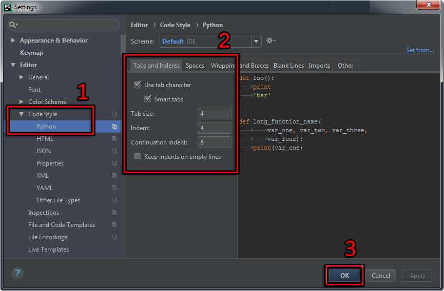
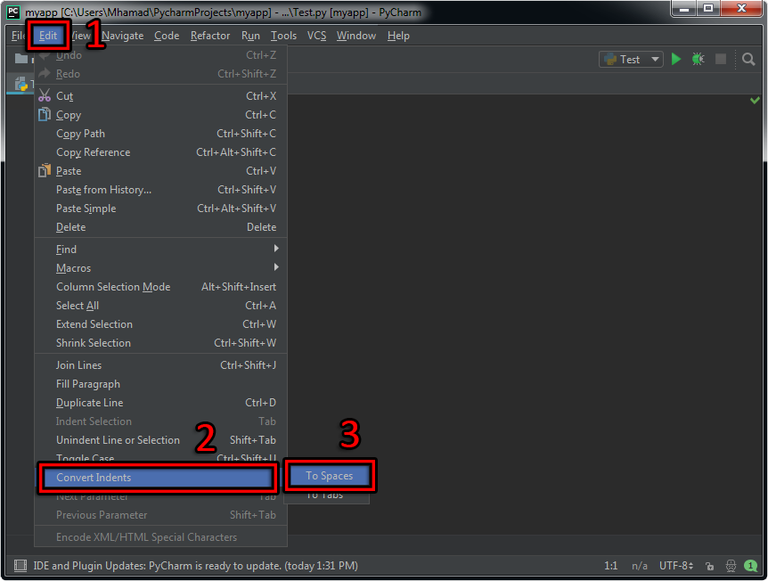

Pythonأسلوب كتابة الكود في بايثون
مبادئ كتابة الكود في بايثون
في البداية عليك معرفة أن كل ما ستتعلمه في هذا الدرس عبارة عن شرح نظري لأساليب كتابة الكود.
إذاَ في هذا الدرس ستتعلم كيف تكتب كود بايثون بشكل صحيح يفهمه الكمبيوتر و يفهمه أي شخص يحاول قراءة الكود الذي ستقوم أنت بكتابته مستقبلاً عند بناء تطبيقاتك الخاصة.
Case Sensitivity
Case Sensitivity تعني أن لغة البرمجة تميز بين الأحرف الكبيرة و الأحرف الصغيرة.
بايثون تعامل الأسماء التي نستخدمها بتأني سواء كنا نضع هذه الأسماء للمتغيرات, الدوال, الكلاسات, الكائنات إلخ.
مثال: note و Note ليسوا شيئاً واحداً.
بينما في لغات برمجة أخرى مثل HTML لا يهم إذا كانت الأحرف كبيرة أو صغيرة.
مثال: note و Note و NoTe و NOTE هم شيئاً واحداً.
إسم الكلاس
دائماً إبدأ إسم الكلاس بحرف كبير و في حال كان إسم الكلاس يتألف من أكثر من كلمة, إجعل أول حرف من كل كلمة كبيراً.
أمثلة
•في حال كان إسم الكلاس يتألف من كلمة واحدة.
class First:
•في حال كان إسم الكلاس يتألف من أكثر من كلمة.
class FirstPythonClass:
إسم المتغير
إستخدم الأحرف الصغيرة عند وضع أسماء للمتغيرات و في حال كان إسم المتغير يتألف من أكثر من كلمة قم بوضع _ بين كل كلمتين.
أمثلة
•في حال كان إسم المتغير يتألف من كلمة واحدة.
average = 10
•في حال كان إسم المتغير يتألف من أكثر من كلمة.
total_score = 20
إسم الدالة
إستخدم الأحرف الصغيرة عند وضع أسماء للدوال و في حال كان إسم الدالة يتألف من أكثر من كلمة قم بوضع _ بين كل كلمتين.
أمثلة
•في حال كان إسم الدالة يتألف من كلمة واحدة.
def display():
•في حال كان إسم الدالة يتألف من أكثر من كلمة.
def display_user_info():
التعليقات
نستخدم التعليقات لنضع ملاحظات حول الكود الذي كتبناه فقط لكي لا ننسى كيف برمجنا الكود في حال أردنا مراجعته أو التعديل عليه بعد وقت طويل.
التعليقات لا تؤثر إطلاقاً على الكود المكتوب الموضوع في البرنامج و يمكن وضع عدد غير محدود من التعليقات.
لتضع تعليق, ضع الرمز # ثم أكتب بعده ما شئت.
تذكر: أنت لست مجبراً على وضع تعليقات في برامجك. و لكننا ننصحك بوضع تعليقات دائماً حتى تساعدك في فهم الكود الذي كتبته.
مثال
# هذا تعليق يتألف من سطر واحد و هو لا يؤثر أبداً على الكود الموضوع
# هذا تعليق آخر.. كما تلاحظ, يمكنك وضع العدد الذي تريده من التعليقات
ملاحظة: يمكن وضع تعليقات بطرق أخرى في بايثون, لكن مطوري لغة بايثون في موقعهم الرسمي ينصحوا بإعتماد هذا الأسلوب فقط في وضع التعليقات.
كتابة أكثر من أمر واحد على نفس السطر
إفتراضياً, بايثون تعتبر أن كل أمر يكتب على سطر واحد.
إذا أردت كتابة أكثر من أمر على نفس السطر قم بوضع فاصلة منقوطة ; بين كل أمرين و هكذا سيفهم مترجم لغة بايثون أن السطر عليه أكثر من أمر.
مثال
•هنا قمنا بوضع ثلاث أوامر على سطر واحد. فعلياً, كل أمر هنا عبارة عن تعريف متغير و إعطائه قيمة.
x = 1; y = 2; z = 3
كتابة أمر واحد على أكثر من سطر
إذا أردت كتابة أمر واحد على أكثر من سطر قم بوضع الرمز \ في نهاية كل سطر و هكذا سيفهم مترجم لغة بايثون أن الأمر يتألف من أكثر من سطر.
المثال الأول
Test.py
# هنا قمنا بتعريف ثلاث متغيرات
item_1 = 10
item_2 = 20
item_3 = 30
# الثلاث أسطر التالية عبارة عن أمر واحد
# total و وضع الناتج في المتغير item_3 و item_2 و item_1 إذا هنا سيتم جمع قيم المتغيرات
total = item_1 + \
item_2 + \
item_3
# total هنا قمنا بعرض قيمة المتغير
print("total contains:", total)
•سنحصل على النتيجة التالية عند التشغيل.
total contains: 60
ملاحظة: الجمل التي تحتوي على الرموز [] أو () أو {} يمكن كتابتها مباشرةً على عدة أسطر. أي لا تحتاج \ في نهاية كل سطر.
المثال الثاني
•هنا قمنا بتعريف مصفوفة من النصوص.
Test.py
# الأربعة أسطر التالية عبارة عن أمر واحد
seasons = ['Autumn',
'Winter',
'Spring',
'Summer']
# seasons هنا قمنا بعرض القيم المخزنة في المصفوفة
print("Seasons contains:", seasons)
•سنحصل على النتيجة التالية عند التشغيل.
Seasons contains: ['Autumn', 'Winter', 'Spring', 'Summer']
الأحرف المستخدمة في وضع الأسماء في بايثون
أي إسم نضعه لمتغير, دالة, كلاس, كائن إلخ.. يسمى identifier في البرمجة.
في بايثون كل عنصر نريد إنشاؤه علينا إعطاؤه إسم خاص, أي علينا تحديد الـ identifier له.
إذاً يتم التمييز بين العناصر في بايثون من خلال أسمائهم, أي من خلال الـ Identifiers.
قواعد إلزامية عند إعطاء الأسماء
الـ Identifiers يجب أن يبدأوا بحرف كبير بين A-Z أو حرف صغير بين a-z أو الشحطة _.
يمنع إستخدام أي كلمة من الكلمات المحجوزة ( Keywords ).
لا تنسى أن بايثون تطبق مبدأ الـ Case Sensitive.
ركز على أول حرف فقط
أمثلة للأسماء التي يسمح باستخدامها: Harmash , name , _number
أمثلة للأسماء التي يمنع استخدامها: 1st , -cash , @user
الكلمات المحجوزة في بايثون
جميع الكلمات التالية محجوزة للغة بايثون, أي لا يمكن إستخدامها كـ Identifiers.
and
assert
break
class
continue
def
del
elif
else
except
exec
False
finally
for
from
global
if
import
in
is
lambda
None
nonlocal
not
or
pass
print
raise
return
True
try
while
with
yield
قواعد ترتيب الكود في بايثون
في البداية إذا كنت تستخدم برنامج PyCharm فإنه سيقوم بتنبيهك إذا خالفت أي قاعدة من قواعد كتابة الكود الإجبارية في بايثون.
قواعد كتابة الكود في بايثون هي التالية:
لا تقم بإضافة أي مسافة فارغة باستخدام الزر TAB لأن المسافة التي يعطيها هذا الزر غير مسموح إستخدامها في لغة بايثون.
إستخدم 4 مسافات فارغة Space عند وضع الكود بشكل متداخل.
ضع سطر فارغ على الأقل بين السطر الذي تم فيه تعريف الكلاس و الدوال المعرفة بداخله.
ضع سطر فارغ على الأقل بين كل دالتين.
ضع سطر فارغ بين كل إثنين بلوك تضيفهما بداخل الدوال.
ضع مسافة فارغة حول جمل التحكم و جمل الشرط.
عند وضع التعليقات يفضل إستخدام الرمز # في بداية كل سطر حتى و إن كان التعليق يتألف من عدة أسطر.
عدد الأحرف القصوى التي يمكن وضعها في كل سطر هو 79 حرف.
مصطلحات تقنية
حل مشكلة إستخدام زر الـ TAB في بايثون
برنامج الـ PyCharm يتيح لك إمكانية إستخدام زر الـ TAB لإضافة 4 مسافات فارغة دفعة واحدة و بدون مشاكل بشرط ضبط ذلك يدوياً.
لجعل زر الـ TAB يضيف 4 مسافات فارغة عند النقر عليه بدل إضافة مسافة كبيرة في برنامج PyCharm, قم باتباع الخطوات التالية:
أنقر على S + Alt + Ctrl لتفتح صفحة الضبط.
أنقر على Code Style ثم Python ثم تأكد من اختيار نفس الخصائص التي في الصورة.

تحويل كل TAB موجودة في ملف البايثون إلى 4 مسافات فارغة
عند نسخ الكود و لصقه في ملف تلاحظ أن المسافات الفارغة التي كانت في الملف تحولت بشكل تلقائي إلى TABS.
لذلك يجب تحويل هذه الـ TABS مسافات فارغة من جديد حتى لا تخالف شروط كتابة الكود في بايثون.
برنامج الـ PyCharm يتيح لك إمكانية تحويل كل TAB موجودة في الكود إلى 4 مسافات فارغة دفعة واحدة و بدون مشاكل بشرط ضبط ذلك يدوياً.
لجعل كل TAB تتحول إلى 4 مسافات فارغة في برنامج PyCharm, قم باتباع الخطوات التالية:

أمثلة حول طريقة كتابة الكود في بايثون
الهدف من المثال التالي إظهار كيف يجب ترتيب كود البايثون و ليس معرفة طريقة عمله.
المثال الأول
Test.py
# قيمته 14 note هنا قمنا بتعريف متغير إسمه
note = 14
# أكبر أو تساوي 10 سيتم تنفيذ أمر الطباعة الموضوع بداخلها note هنا وضعنا شرط يعني أنه إذا كانت قيمة المتغير
if note >= 10:
print("Congratulations.. you passed the test!")
# أكبر أو تساوي 10 سيتم تنفيذ أمر الطباعة الموضوع بداخلها note هنا لنا أنه إذا لم تكن قيمة المتغير
else:
print("Sorry.. you failed the test!")
•سنحصل على النتيجة التالية عند التشغيل.
Congratulations.. you passed the test!
في حال كنت تنوي وضع كل الكود السابق بداخل كلاس, يجب أن تضيف 4 مسافات فارغة قبل كل سطر.
تذكر: الهدف من المثال التالي إظهار كيف يجب ترتيب كود البايثون و ليس معرفة طريقة عمله.
المثال الثاني
Test.py
# Test هنا قمنا بتعريف كلاس إسمه
class Test:
# قيمته 14 note هنا قمنا بتعريف متغير إسمه
note = 14
# أكبر أو تساوي 10 سيتم تنفيذ أمر الطباعة الموضوع بداخلها note هنا وضعنا شرط يعني أنه إذا كانت قيمة المتغير
if note >= 10:
print("Congratulations.. you passed the test!")
# أكبر أو تساوي 10 سيتم تنفيذ أمر الطباعة الموضوع بداخلها note هنا كأننا قلنا أنه إذا لم تكن قيمة المتغير
else:
print("Sorry.. you failed the test!")
•سنحصل على النتيجة التالية عند التشغيل.
Congratulations.. you passed the test!

 محرر الويب
محرر الويب نظام الألوان
نظام الألوان محول الوحدات
محول الوحدات محلل عناوين الشبكات
محلل عناوين الشبكات